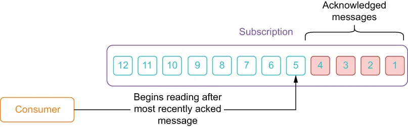
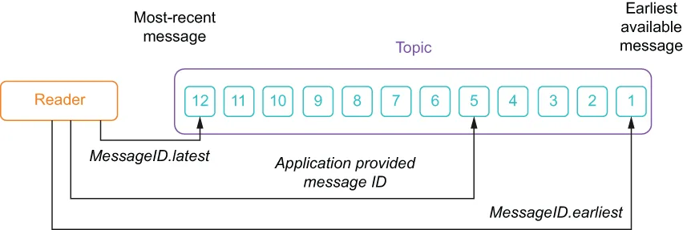

In addition to the Java Admin API we looked at earlier in the chapter, Pulsar also provides a Java client that can be used to create producers, consumers, and message readers. The latest version of the Pulsar Java client library is available in the Maven central repository. To use the latest version, simply add the Pulsar client library to your build configuration, as shown in the next listing. Once you have added the Pulsar client library to your project, you can start using it to interact with Pulsar by creating clients, producers, and consumers inside your Java code, as we’ll see in the next section.
除了我们在本章前面看过的 Java Admin API，Pulsar 还提供了一个 Java 客户端，可用于创建生产者、消费者和消息 reader。Pulsar Java 客户端库的最新版本可以在 Maven 中央仓库中找到。要使用最新版本，只需把 Pulsar 客户端库添加到你的构建配置中，如下一个清单所示。一旦把 Pulsar 客户端库加入到你的项目中，你就可以开始在 Java 代码中创建客户端、生产者和消费者，用它来与 Pulsar 交互，我们将在下一节看到这一点。
Listing 3.8 Adding the Pulsar client library to your Maven project
<!--- Inside your pom.xml -->
<properties>
<pulsar.version>2.7.2</pulsar.version>
</properties>
<dependency>
<groupId>org.apache.pulsar</groupId>
<artifactId>pulsar-client</artifactId>
<version>${pulsar.version}</version>
</dependency>
Pulsar client configuration in Java
Java 中的 Pulsar 客户端配置
When an application wants to create either a producer or a consumer, you first need to instantiate a PulsarClient object, using code like that shown in the following listing. In this object, you will provide the URL of the Pulsar broker along with any other connection configuration information that may be required, such as security credentials.
当应用想要创建生产者或消费者时，你首先需要实例化一个 PulsarClient 对象，使用的代码类似于下面清单中所示。在这个对象中，你要提供 Pulsar broker 的 URL，以及可能需要的任何其他连接配置信息，例如安全凭证。
Listing 3.9 Creating a PulsarClient in Java
PulsarClient client = PulsarClient.builder()
.serviceUrl("pulsar://localhost:6650") ❶
.build();
❶ The connection URL to the Pulsar broker
❶ 连接 Pulsar broker 的 URL
The PulsarClient object handles all the low-level details involved in creating a connection to the Pulsar broker, including automatic retries and connection security if the Pulsar broker has TLS configured. Client instances are thread safe and can be reused for creating and managing multiple producers and consumers.
PulsarClient 对象负责处理与 Pulsar broker 建立连接所涉及的全部底层细节，包括自动重试，以及在 Pulsar broker 配置了 TLS 时的连接安全。客户端实例是线程安全的，可以被复用来创建和管理多个生产者和消费者。
Pulsar producers in Java
Java 中的 Pulsar 生产者
In Pulsar, producers are used to write messages to topics. Listing 3.10 shows how you can create a producer in Java by specifying the name of the topic you are going to send messages to. While there are several configuration settings that can be used when creating a producer, all that is required is the topic name itself.
在 Pulsar 中，生产者被用来向主题写入消息。清单 3.10 展示了如何通过指定你要把消息发送到哪个主题来在 Java 中创建一个生产者。虽然创建生产者时可以使用若干配置项，但唯一必需的就是主题名本身。
Listing 3.10 Creating a Pulsar producer in Java
Producer<byte[]> producer = client.newProducer()
.topic("persistent://manning/chapter03/example-topic")
.create();
It is also possible to attach metadata to a given message, as shown in listing 3.11, which shows how to specify the message key that is used for routing with a key-shared subscription, along with some message properties. This capability can be used to tag the message with useful information, such as when the message was sent, who sent the message, the device ID if the message is from an embedded sensor, and other information.
也可以给某条消息附加元数据，如清单 3.11 所示；该清单展示了如何指定用于按 Key 共享订阅路由的消息 key，以及一些消息属性。这一能力可用于为消息打上有用信息的标签，例如消息何时被发送、谁发送的、如果消息来自嵌入式传感器则附上设备 ID，以及其他信息。
Listing 3.11 Specifying metadata in Pulsar messages
Producer<byte[]> producer = client.newProducer()
.topic("persistent://manning/chapter03/example-topic")
.create();
producer.newMessage()
.key("tempurture-readings") ❶
.value("98.0".getBytes()) ❷
.property("deviceID", "1234") ❸
.property("timestamp", "08/03/2021 14:48:24.1")
.send();
❶ You can specify a message key.
❶ 你可以指定一个消息 key。
❷ Send the message content as a byte array.
❷ 把消息内容作为字节数组发送。
❸ You can attach as many properties as you like.
❸ 你可以附加任意数量的属性。
The metadata values you attach to the message will be available to the message consumers who can then use that information when performing their processing logic. For example, a property containing a timestamp value that represents when the message was sent could be used to sort the incoming messages into chronological order of occurrence or to correlate it with messages from another topic.
你附加到消息上的元数据值对消息消费者是可见的，消费者随后可以在执行其处理逻辑时使用这些信息。例如，一个包含"消息何时被发送"的时间戳值的属性，可以被用来把传入的消息按发生的时间先后排序，或者用来与来自另一个主题的消息做关联。
Pulsar consumers in Java
Java 中的 Pulsar 消费者
In Pulsar, the consumer interface is used to listen on a specific topic and process the incoming messages. After a message has been successfully processed, an acknowledgment should be sent back to the broker to indicate that we are done processing the message within the subscription. This allows the broker to know which message in the topic needs to be delivered to the next consumer on the subscription. In Java, you can create a consumer by specifying a topic and a subscription, as shown in the following listing.
在 Pulsar 中，消费者接口被用来监听某个特定的主题并处理传入的消息。在一条消息被成功处理之后，应当向 broker 回送一个确认，以表明我们已在该订阅内完成了对这条消息的处理。这使 broker 能够知道主题中的哪条消息需要被投递给该订阅上的下一个消费者。在 Java 中，你可以通过指定一个主题和一个订阅来创建消费者，如下面的清单所示。
Listing 3.12 Creating a Pulsar consumer in Java
Consumer consumer = client.newConsumer()
.topic("persistent://manning/chapter03/example-topic") ❶
.subscriptionName("my-subscription") ❷
.subscribe();
❶ Specify the topic you want to consume from.
❶ 指定你想要消费的主题。
❷ You must specify the unique name of your subscription.
❷ 你必须指定你的订阅的唯一名称。
The subscribe method will attempt to connect the consumer to the topic using the specified subscription, which may fail if the subscription already exists and isn’t one of the shared subscription types (e.g., you attempt to connect to an exclusive subscription that already has an active consumer). If you are connecting to the topic for the first time using the specified subscription name, a subscription is created for you automatically. Whenever a new subscription is created, it is initially positioned at the end of the topic by default, and consumers on that subscription will begin reading the first message created after the subscription was created. If you are connecting to a preexisting subscription, it will begin reading from the earliest unacknowledged message within the subscription, as shown in figure 3.2. This ensures that you pick up from where you left off in the event that your consumer is unexpectedly disconnected from the topic.
subscribe 方法会尝试使用指定的订阅把消费者连接到主题；如果该订阅已经存在且不属于共享订阅类型之一，就可能会失败（例如，你试图连接到一个已经有活跃消费者的独占订阅）。如果你是第一次使用指定的订阅名称连接到该主题，系统会自动为你创建一个订阅。每当一个新的订阅被创建时，它默认初始定位在主题的末尾，该订阅上的消费者会从订阅创建之后产生的第一条消息开始读取。如果你连接的是一个已存在的订阅，它会从该订阅内最早的未确认消息开始读取，如图 3.2 所示。这确保了在你的消费者意外与主题断开连接的情况下，你能够从中断的地方继续。

Figure 3.2 The consumer starts reading messages immediately after the most recently acknowledged message in the subscription. If the subscription is new, then it starts reading the messages that are added to the topic after the subscription was created.
图 3.2 消费者从订阅中最近一条已确认消息之后的位置开始读取消息。如果该订阅是新建的，那么它会从订阅创建之后添加到主题中的消息开始读取。
One common consumption pattern is to have the consumer listen on the topic inside a while loop. In listing 3.13, the consumer continuously listens for messages, prints the contents of any message that’s received, and then acknowledges that the message has been processed. If the processing logic fails, we use negative acknowledgement to have the message redelivered at a later point in time.
一种常见的消费模式是让消费者在一个 while 循环内监听主题。在清单 3.13 中，消费者持续监听消息，打印收到的任何消息的内容，然后确认该消息已被处理。如果处理逻辑失败，我们就使用否定确认，让该消息在稍后的某个时间点被重新投递。
Listing 3.13 Consuming Pulsar messages in Java
while (true) {
// Wait for a message
Message msg = consumer.receive(); ❶
try {
System.out.println("Message received: " +
new String(msg.getData())); ❷
consumer.acknowledge(msg); ❸
} catch (Exception e) {
consumer.negativeAcknowledge(msg); ❹
}
}
❶ Wait for a message.
❶ 等待一条消息。
❷ Process the message.
❷ 处理该消息。
❸ Acknowledge the message so it can be deleted by the broker.
❸ 确认该消息，以便 broker 将其删除。
❹ Mark the message for redelivery.
❹ 把该消息标记为需要重新投递。
The message consumer shown in listing 3.13 processes the messages in a synchronous manner because the receive() method it is using to retrieve messages is a blocking method (i.e., it waits indefinitely for a new message to arrive). While this might be fine for some use cases where the message volume is low, or we are not concerned about the latency between when a message is published and when it is processed, generally synchronous processing is not the best approach. A better approach is to process these messages in an asynchronous manner, which relies on the MessageListener interface provided by the Java API, as shown in the following listing.
清单 3.13 中所示的消息消费者以同步的方式处理消息，因为它用来获取消息的 receive() 方法是一个阻塞方法（即它会无限期地等待新消息到达）。虽然对于某些消息量较低的用例，或者我们不关心消息从发布到被处理之间的延迟时，这样做可能没问题，但一般而言，同步处理并不是最好的方式。更好的方式是以异步方式处理这些消息，这依赖于 Java API 所提供的 MessageListener 接口，如下面的清单所示。
Listing 3.14 Asynchronous message processing in Java
package com.manning.pulsar.chapter3.consumers;
import java.util.stream.IntStream;
import org.apache.pulsar.client.api.ConsumerBuilder;
import org.apache.pulsar.client.api.PulsarClient;
import org.apache.pulsar.client.api.PulsarClientException;
import org.apache.pulsar.client.api.SubscriptionType;
public class MessageListenerExample {
public static void main() throws PulsarClientException {
PulsarClient client = PulsarClient.builder() ❶
.serviceUrl(PULSAR_SERVICE_URL)
.build();
ConsumerBuilder<byte[]> consumerBuilder = ❷
client.newConsumer()
.topic(MY_TOPIC)
.subscriptionName(SUBSCRIPTION)
.subscriptionType(SubscriptionType.Shared)
.messageListener((consumer, msg) -> { ❸
try {
System.out.println("Message received: " +
new String(msg.getData()));
consumer.acknowledge(msg);
} catch (PulsarClientException e) {
}
})
IntStream.range(0, 4).forEach(i -> { ❹
String name = String.format("mq-consumer-%d", i);
try {
consumerBuilder
.consumerName(name)
.subscribe(); ❺
} catch (PulsarClientException e) {
e.printStackTrace();
}
});
...
}
}
❶ The Pulsar client used to connect to Pulsar
❶ 用于连接 Pulsar 的 Pulsar 客户端
❷ The consumer factory that will be used to create the consumer instances later
❷ 稍后将用于创建各个消费者实例的消费者工厂
❸ The business logic to execute when a message is received
❸ 收到消息时要执行的业务逻辑
❹ Create five consumers on the topic, each with the same MessageListener implementation.
❹ 在该主题上创建五个消费者，每个都使用相同的 MessageListener 实现。
❺ Connects the consumer to the topic to start receiving messages
❺ 把消费者连接到主题，以开始接收消息
When using the MessageListener interface, as shown in listing 3.14, you pass in the code that you want executed whenever a message is received. In this case I used a Java Lambda to provide the code inline, and you can see that I still have access to the consumer that I can use to acknowledge the message. Using the listener pattern allows you to separate the business logic from the management of the threads because the Pulsar consumer automatically creates a thread pool for running the MessageListeners instances and handles all the threading logic for you. Putting this all together, we have a Java program in the following listing that instantiates a Pulsar client and uses it to create a producer and a consumer that exchange messages over the my-topic topic.
使用 MessageListener 接口时，如清单 3.14 所示，你传入的是希望在每收到一条消息时被执行的代码。在本例中，我用一个 Java Lambda 以内联方式提供了这段代码，你可以看到我仍然能够访问那个消费者对象，从而用它来确认消息。使用监听器模式使你能够把业务逻辑与线程管理分离开来，因为 Pulsar 消费者会自动创建一个线程池来运行各个 MessageListener 实例，并为你处理全部线程逻辑。把这些都组合起来，我们就得到了下面清单中的 Java 程序：它实例化一个 Pulsar 客户端，并用它创建一个生产者和一个消费者，通过 my-topic 主题互相交换消息。
Listing 3.15 Endless Pulsar producer and consumer pair
import org.apache.pulsar.client.api.Consumer;
import org.apache.pulsar.client.api.Message;
import org.apache.pulsar.client.api.Producer;
import org.apache.pulsar.client.api.PulsarClient;
import org.apache.pulsar.client.api.PulsarClientException;
public class BackAndForth {
public static void main(String[] args) throws Exception {
BackAndForth sl = new BackAndForth();
sl.startConsumer();
sl.startProducer();
}
private String serviceUrl = "pulsar://localhost:6650";
String topic = "persistent://manning/chapter03/example-topic";;
String subscriptionName = "my-sub";
protected void startProducer() {
Runnable run = () -> {
int counter = 0;
while (true) {
try {
getProducer().newMessage()
.value(String.format("{id: %d, time: %tc}",
++counter, new Date()).getBytes())
.send();
Thread.sleep(1000);
} catch (final Exception ex) { }
}};
new Thread(run).start();
}
protected void startConsumer() {
Runnable run = () -> {
while (true) {
Message<byte[]> msg = null;
try {
msg = getConsumer().receive();
System.out.printf("Message received: %s \n",
new String(msg.getData()));
getConsumer().acknowledge(msg);
} catch (Exception e) {
System.err.printf(
"Unable to consume message: %s \n", e.getMessage());
consumer.negativeAcknowledge(msg);
}
}};
new Thread(run).start();
}
protected Consumer<byte[]> getConsumer() throws PulsarClientException {
if (consumer == null) {
consumer = getClient().newConsumer()
.topic(topic)
.subscriptionName(subscriptionName)
.subscriptionType(SubscriptionType.Shared)
.subscribe();
}
return consumer;
}
protected Producer<byte[]> getProducer() throws PulsarClientException {
if (producer == null) {
producer = getClient().newProducer()
.topic(topic).create();
}
return producer;
}
protected PulsarClient getClient() throws PulsarClientException {
if (client == null) {
client = PulsarClient.builder()
.serviceUrl(serviceUrl)
.build();
}
return client;
}
}
As you can see, this code creates both a producer and consumer on the same topic and runs them simultaneously in separate threads. If you run this code, you should see output like the following listing.
正如你所看到的，这段代码在同一个主题上同时创建了一个生产者和一个消费者，并让它们在各自的线程中同时运行。如果你运行这段代码，应该会看到类似下面清单所示的输出。
Listing 3.16 Endless Pulsar producer and consumer pair output
Message received: {id: 1, time: Sun Sep 06 16:24:04 PDT 2020}
Message received: {id: 2, time: Sun Sep 06 16:24:05 PDT 2020}
Message received: {id: 3, time: Sun Sep 06 16:24:06 PDT 2020}
...
Notice how the first two messages we sent earlier are not included in the output, since the subscription was created after those messages were published. This is in direct contrast to the Reader interface, which we will examine shortly.
请注意，我们早先发送的前两条消息并没有出现在输出中，因为该订阅是在那些消息被发布之后才创建的。这与 Reader 接口形成了直接对比，我们稍后就会考察它。
Dead letter policy
死信策略
While there are several configuration options for a Pulsar consumer that are described in the online documentation (https://pulsar.apache.org/docs/en/client-libraries-java/#configure-consumer), I wanted to highlight the dead-letter-policy configuration, which is useful when you encounter messages that cannot be processed successfully, such as when you are parsing unstructured messages from a topic. Under normal processing conditions, these messages would cause an exception to be thrown.
虽然 Pulsar 消费者有若干配置项，在线文档（https://pulsar.apache.org/docs/en/client-libraries-java/#configure-consumer）中都有描述，但我想着重说一下死信策略（dead-letter-policy）这一配置：当你遇到无法被成功处理的消息时（例如你在解析主题中的非结构化消息时），它会非常有用。在正常的处理条件下，这些消息会导致抛出异常。
At this point you have a couple of options; the first is to trap any exceptions, and simply acknowledge these messages as successfully processed, which effectively ignores them. Another option is to have them redelivered by negatively acknowledging them. However, this approach might result in an infinite redelivery loop for these messages if the underlying issue with the messages cannot be resolved (e.g., a message that cannot be parsed will always throw an exception no matter how many times you process it). A third option is to route these problematic messages to a separate topic, known as a dead-letter topic. This allows you to avoid the infinite redelivery loop, while retaining the messages for further processing and/or examination at a later point in time.
此时你有几种选择：第一种是捕获所有异常，并简单地把这些消息确认为已成功处理，实际上是忽略它们。另一种选择是通过否定确认让它们被重新投递。然而，如果消息本身的问题无法被解决，这种做法可能导致这些消息陷入无限的重新投递循环（例如，一条无法被解析的消息，无论你处理多少次都会抛出异常）。第三种选择是把这些有问题的消息路由到一个独立的主题，即所谓的死信主题。这使你能够避免无限的重新投递循环，同时把这些消息保留下来，以便日后做进一步处理和/或检查。
Listing 3.17 Configure the dead letter topic policy on a consumer
Consumer consumer = client.newConsumer()
.topic("persistent://manning/chapter03/example-topic")
.subscriptionName("my-subscription")
.deadLetterPolicy(DeadLetterPolicy.builder()
.maxRedeliverCount(10) ❶
.deadLetterTopic("persistent://manning/chapter03/my-dlq”)) ❷
.subscribe();
❶ Set the max redelivery count.
❶ 设置最大重新投递次数。
❷ Set the dead-letter topic name.
❷ 设置死信主题的名称。
To configure a dead-letter policy for a particular consumer, Pulsar requires you to specify a few properties, such as the max redelivery count, when you first build it, as shown in listing 3.17. When a message exceeds the user-specified maximum redelivery count, it will be sent to the dead-letter topic and acknowledged automatically. These messages can then be examined at a later point in time.
要为某个特定的消费者配置死信策略，Pulsar 要求你在初次构建它时就指定几个属性，例如最大重新投递次数，如清单 3.17 所示。当某条消息超过了用户指定的最大重新投递次数时，它会被发送到死信主题，并被自动确认。这些消息随后可以在日后的某个时间点被检查。
Pulsar readers in Java
Java 中的 Pulsar reader
The reader interface allows applications to manage the positions from which they will consume messages. When you connect to a topic using a reader, you must specify which message the reader will begin consuming messages from when it connects to the topic. In short, the reader interface provides Pulsar clients with a low-level abstraction that allows them to manually position themselves within a topic, as shown in figure 3.3.
reader 接口允许应用自行管理它们将从哪个位置开始消费消息。当你使用 reader 连接到主题时，必须指定该 reader 在连接到主题时将从哪条消息开始消费。简而言之，reader 接口为 Pulsar 客户端提供了一个底层抽象，使它们能够在一个主题内手动定位自己的位置，如图 3.3 所示。

Figure 3.3 When connecting to a topic, the reader interface enables you to begin with the earliest available message, the latest available message, or an application provided message ID.
图 3.3 在连接到主题时，reader 接口使你能够选择从最早的可用消息、最新的可用消息，或由应用提供的某个消息 ID 开始读取。
The reader interface is helpful for use cases like using Pulsar to provide effectively-once processing semantics for a stream processing system. For this use case, it’s essential that the stream processing system is able to rewind topics to a specific message and begin reading there. If you choose to explicitly provide a message ID, your application will be responsible for knowing this message ID in advance, perhaps fetching it from a persistent data store or cache. Once you’ve instantiated a PulsarClient object, you can create a Reader, as shown in the following listing.
reader 接口在这样一类用例中很有帮助：利用 Pulsar 为流处理系统提供有效一次（effectively-once）的处理语义。对于这个用例而言，流处理系统必须能够把主题回绕到某条特定的消息，并从那里开始读取。如果你选择显式提供一个消息 ID，那么你的应用需要负责事先知道这个消息 ID，也许是从某个持久化数据存储或缓存中获取它。一旦你实例化了 PulsarClient 对象，就可以创建一个 Reader，如下面的清单所示。
Listing 3.18 Creating a Pulsar reader
Reader<byte[]> reader = client.newReader()
.topic("persistent://manning/chapter03/example-topic") ❶
.readerName("my-reader")
.startMessageId(MessageId.earliest) ❷
.create();
while (true) {
Message msg = reader.readNext();
System.out.printf("Message received: %s \n", new String(msg.getData()));
}
❶ Specify the topic you want to read from.
❶ 指定你想要读取的主题。
❷ Specify that we want to read from the earliest message.
❷ 指定我们希望从最早的消息开始读取。
If you run this code, you should see output like the following listing. You would start reading from the very first messages that were published to the topic, which were the two “Hello Pulsar” messages we send from the CLI tool.
如果你运行这段代码，应该会看到类似下面清单所示的输出。你会从发布到该主题的最初几条消息开始读取，也就是我们用 CLI 工具发送的那两条 "Hello Pulsar" 消息。
Listing 3.19 Earliest message reader output
Message read: Hello Pulsar
Message read: Hello Pulsar
Message read: {id: 1, time: Sun Sep 06 18:11:59 PDT 2020}
Message read: {id: 2, time: Sun Sep 06 18:12:00 PDT 2020}
Message read: {id: 3, time: Sun Sep 06 18:12:01 PDT 2020}
Message read: {id: 4, time: Sun Sep 06 18:12:02 PDT 2020}
Message read: {id: 5, time: Sun Sep 06 18:12:04 PDT 2020}
Message read: {id: 6, time: Sun Sep 06 18:12:05 PDT 2020}
Message read: {id: 7, time: Sun Sep 06 18:12:06 PDT 2020}
In the example shown in listing 3.18, a reader is created on the specified topic and iterates over each message in the topic, starting with the oldest message in the topic. There are several configuration options for a Pulsar reader that are described in the online documentation (https://pulsar.apache.org/docs/en/client-libraries-java/#reader), but for most cases the default options are sufficient.
在清单 3.18 所示的示例中，一个 reader 被创建在指定的主题上，并遍历该主题中的每一条消息，从主题中最旧的消息开始。Pulsar reader 有若干配置项，在线文档（https://pulsar.apache.org/docs/en/client-libraries-java/#reader）中都有描述，但对于大多数情况而言，默认选项就足够了。